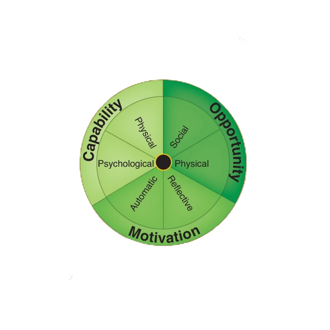
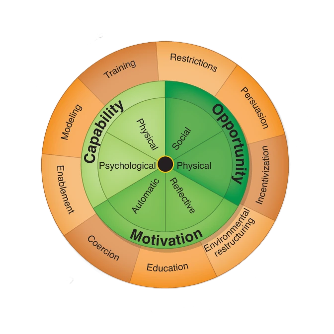
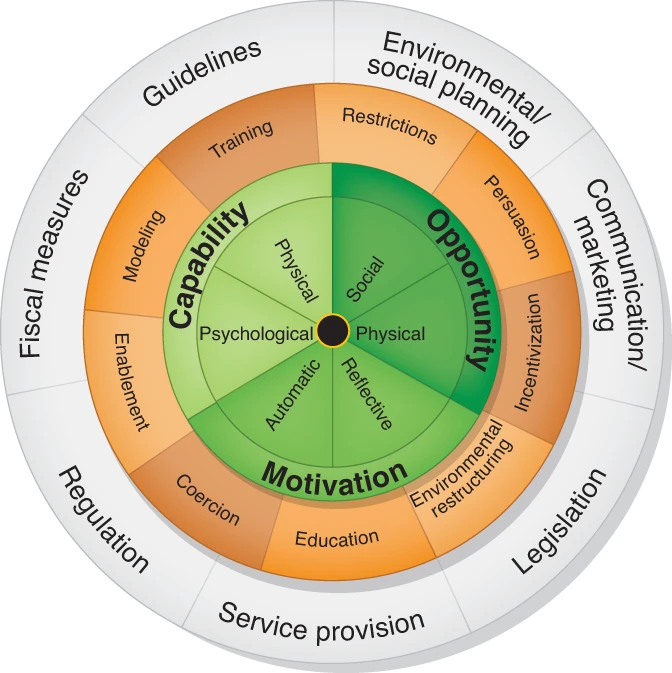
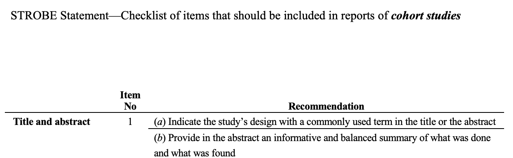
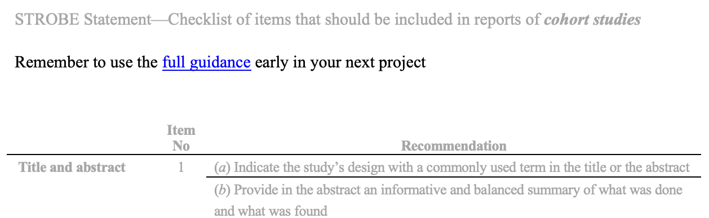
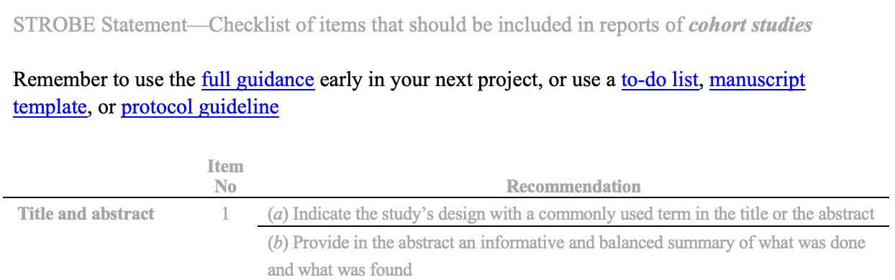
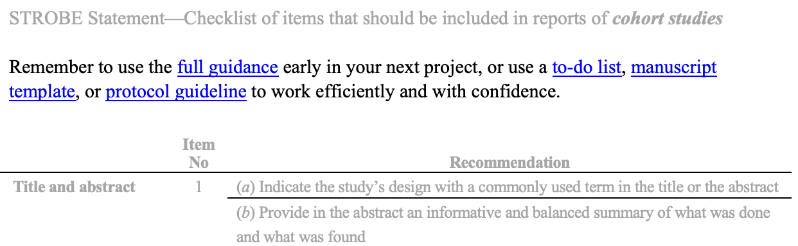
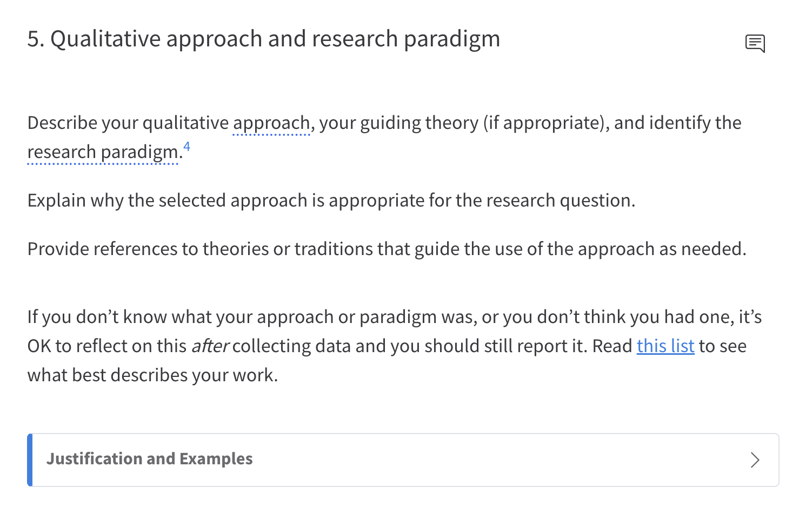

Making guidelines better *
* A deliberately rubbish title slide
Background
Poorly described research 🚫 patient outcomes ☠️
Reporting guidelines solve this
Limited Impact ❌
Background
1: What limits reporting guideline adherence?
- Evidence synthesis
- Journal audit
➡️ 32 possible factors
2: How could these be fixed?
Focus Groups ➡️ 136 ideas
3: Ideas to intervention
Developing a behaviour change intervention to increase adherence to reporting guidelines
James Harwood
Dr Charlotte Albury, Dr Jennifer de Beyer, Dr Michael Schlüssel, Prof. Gary Collins

Methods
Behaviour Change Wheel
(Michie et al. 2011)
Workshops w. EQUATOR UK
- Behavioural analysis
- Define components
- Build intervention



Designing intervention components

Designing intervention components
Capability
Designing intervention components
Opportunity
Designing intervention components
Motivation
Designing intervention components
➡️ 51 intervention components
Each intervention component is defined by the intervention function it uses
⮑ to target a behavioural driver
⮑ that underpins an existing barrier
Item 5. Qualitative approach and research paradigm:
The research paradigm is the set of beliefs and assumptions that guide the research process. These commonly include positivist, post-positivist, constructivist or interpretivist, and critical theory. Qualitative research generally draws from a post-positivist or constructivist/interpretivist paradigm. We recommend identifying the research paradigm so that readers understand whether the researcher assumes that there is a single, objective reality (positivist or post-positivist) and has thus designed the study to describe this reality or whether the researcher assumes multiple, subjective realities and designed the study to describe these multiple realities, with no attempt to merge or reconcile these realities (constructivist/interpretivist). The paradigm has implications for the study design, approach, methods, and techniques to ensure rigour and trustworthiness.
Qualitative research includes an array of approaches and methodologies, both general (e.g., qualitative content analysis, general inductive approach) and specific (e.g., ethnography, grounded theory, phenomenography). Since the research paradigm does not necessarily dictate particular approaches or methods, the approach should also be clearly defined. Stating the approach provides readers the opportunity to evaluate the fidelity of the research approach to the research question(s) and consider the rationale for modifications and deviations from the selected approach. Qualitative research also includes an array of methods that can be used across paradigms and approaches. (See also Item 10) The researcher should explain why the selected approach is appropriate for the research question, and provide references to theories or traditions that guide the use of the approach as needed.
Participation time
Summary
136 ideas ➡️ 51 intervention changes
Each intervention change is defined by the intervention function it uses
⮑ to target a behavioural driver
⮑ that underpins an existing barrier
Improved system



Next steps
Now: Pilot
Future: Evaluation
Hope: Better reporting & better patient outcomes
Questions?
@jamesrharwood james.harwood@stx.ox.ac.uk